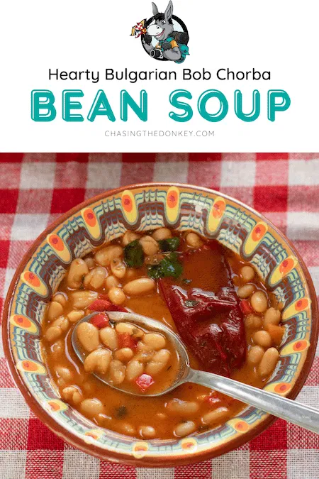

Bob Chorba

Ingredients
- 1 cup dried beans (white or pinto beans)
- 1 medium onion, finely chopped
- 1 medium carrot, diced
- 1 medium red bell pepper, diced
- 2 medium tomatoes, peeled and chopped (or 1 cup canned tomatoes)
- 3-4 cloves garlic, minced
- 3 tbsp sunflower oil or olive oil
- 1 tbsp paprika
- 1 tsp dried mint
- 1 tsp dried savory (chubritsa)
- Salt to taste
- Fresh parsley, chopped (for garnish)
- Water or vegetable broth (enough to cover the beans)
Enjoy making your delicious Bob Chorba with these ingredients!